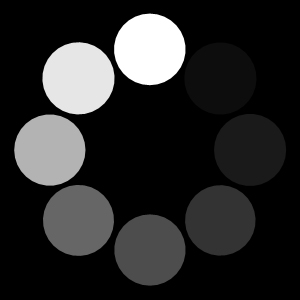

This is your custom loading screen — modify it to fit your needs.
Red
Black
White
Silver
Blue
Change Resolution
Toggle FPS counter
Console command…
Press play
Send key: M
Hold key: W
Release key: W
Quality preset: high
Quality point: 30
Adaptive quality: 20–40
Mouse: Hovering
Mouse: Locked
Device info
Send data to app
😢
Change Resolution
X